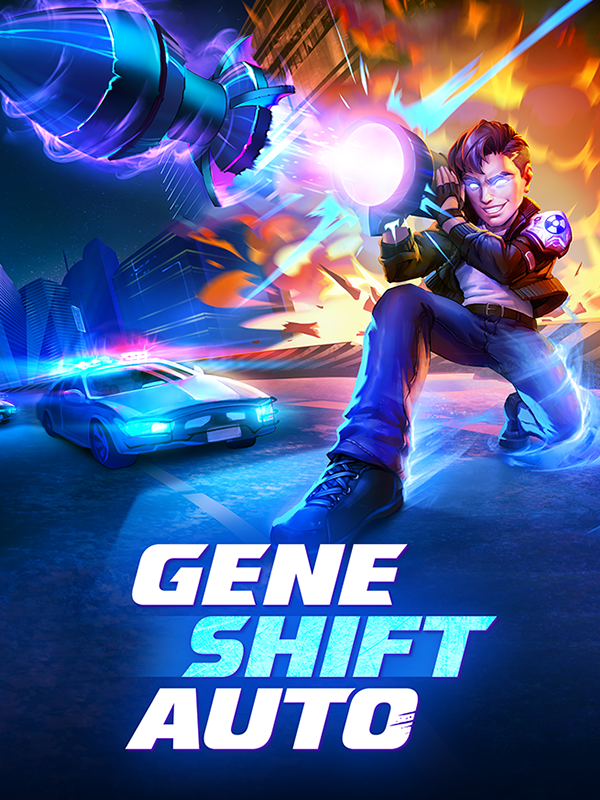

Gene Shift Auto
Gene Shift Auto
Detalhes
|  | |
| Tempo de jogo | Não Jogado |
| Última Atividade | Nunca |
| Adicionado | 11/02/2025 13:17:42 |
| Modificado | 11/02/2025 13:37:03 |
| Status de Conclusão | Not Played |
| Biblioteca | Steam |
| Fonte | Steam |
| Plataforma | PC (Windows) |
| Data de Lançamento | 23/05/2017 |
| Pontuação da Comunidade | 70 |
| Avaliação da crítica | |
| Pontuação do Usuário | |
| Gênero | Adventure Indie Role-playing (RPG) Shooter |
| Desenvolvedor | Ben Johnson (bencelot) |
| Editor | Ben Johnson (bencelot) |
| Funções | Battle Royale Co-Operative Multiplayer Single Player |
| Links | Official Discord Steam Twitch |
| Tag | |
Descrição

Gene Shift Auto is a roguelite-inspired battle royale set in a chaotic GTA-inspired city. It has cops, missions, car chases and more. This city is a playground full of risk and reward, and by mastering it you'll level up powerful abilities like Invisibility, Spike Traps, and Car Bombs.
Like a roguelike, skill choices are randomly generated, so each game plays different and you'll need to adapt to survive. And with ultra-fast 5 minute rounds, you'll have to think on your feet to create a skill build strong enough to win the final showdown!


In Gene Shift Auto looting really matters - you're not just upgrading your gun! You're leveling up gameplay changing abilities like Force Field, Bullet Time, Plasma Ball, and Bouncing Bullets.
These abilities are easy to learn but hard to master, and provide a high skill ceiling perfect for game-winning clutch plays. When you level up you must choose from 2 randomly selected skills. Just like a roguelike, this makes each game play differently, and you are rewarded for your ability to adapt and create synergistic skill builds on the fly.

Want to level up fast? This chaotic city has multiple paths to victory! You can do missions, fight for supply drops, explore for rare loot, and if you're feeling risky - aggro the cops.
But remember, the circle is shrinking. You have to balance risk with reward to earn as much farm as possible, while still surviving to the final showdown. Do you spend your precious time shopping for the perfect weapon? Pre-placing hidden bombs in the showdown area? Or obliterating waves of cop cars as you climb the wanted levels? The choice is yours.

The circle is shrinking - fast! While other BRs have one long round, Gene Shift Auto has 3 ultra-fast rounds - with a high-stakes showdown every 5 minutes. Win round 3 to win the game!
Your skill build progresses from round to round, and if you die you get to keep playing too. You'll play as a zombie and can loot for the next round - or hunt down a survivor to revive. No queueing time, no getting booted to the main menu, just pure refined non-stop action.
Other Cool Features
A singleplayer / coop survival mode with leaderboards and custom difficulty modifiers
Choose from 8 classes, each with a unique playstyle and strategy
Design skill builds that adjust the pool of skills you'll choose from in-game
Wacky challenges, groovy cosmetics, and stats tracking to show off your favorite skills
Small download and instant join times mean you can start playing in minutes!